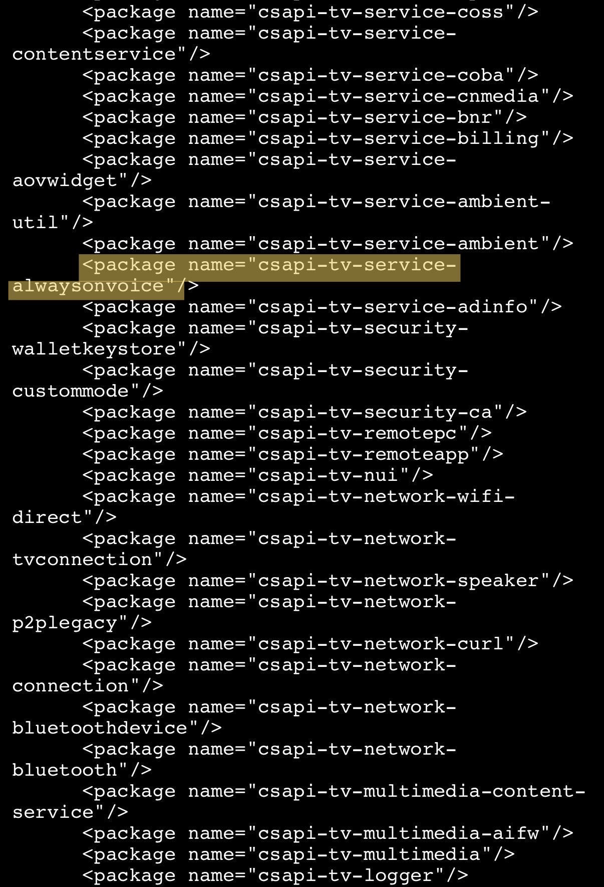
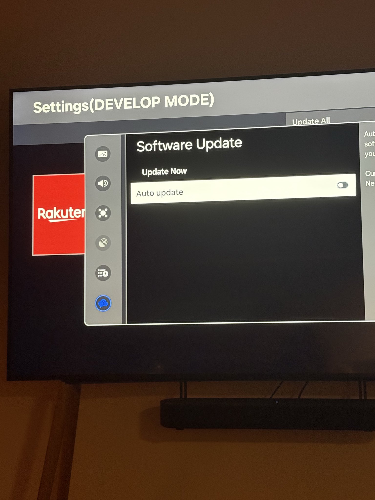
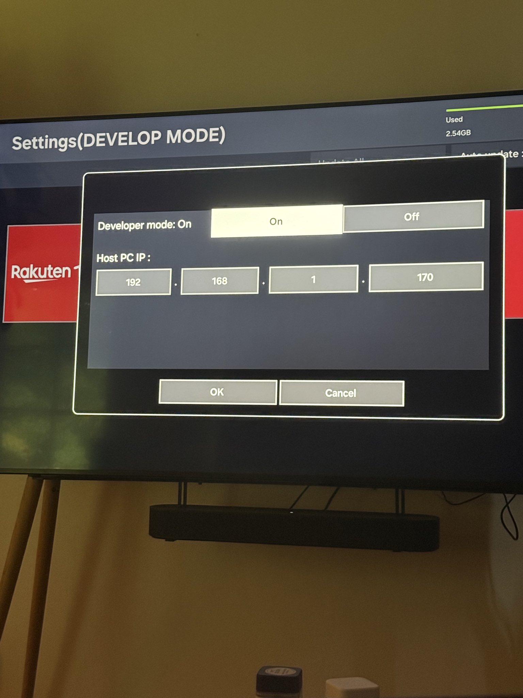
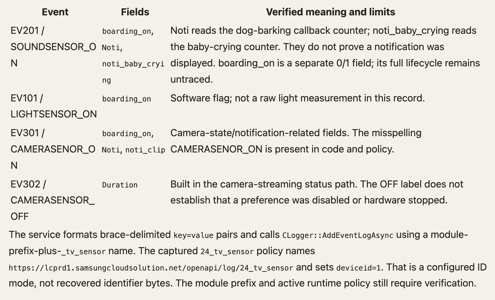
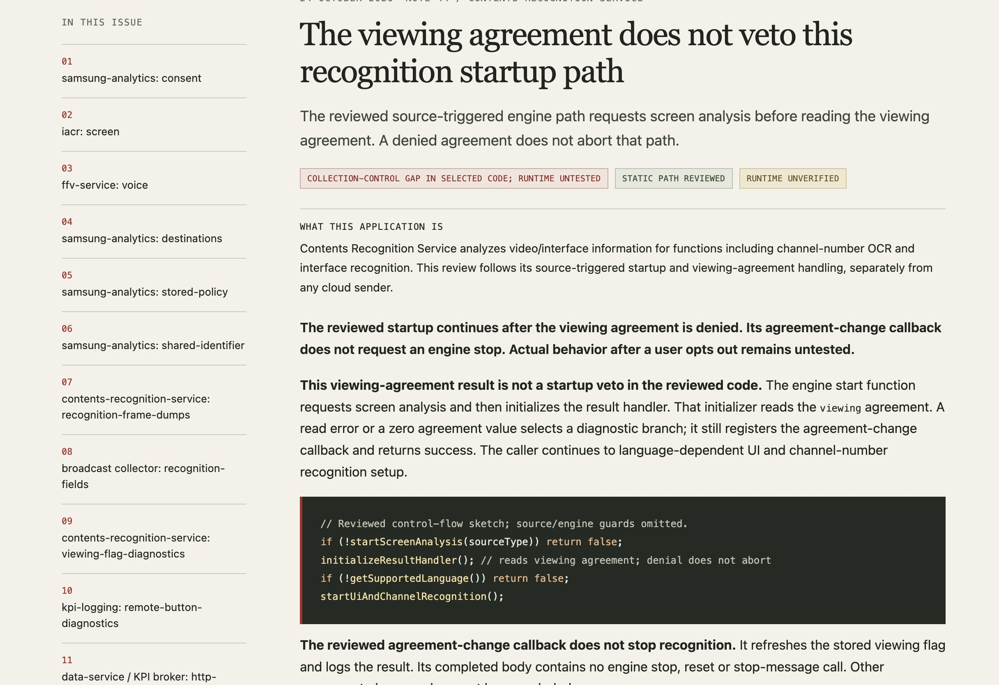
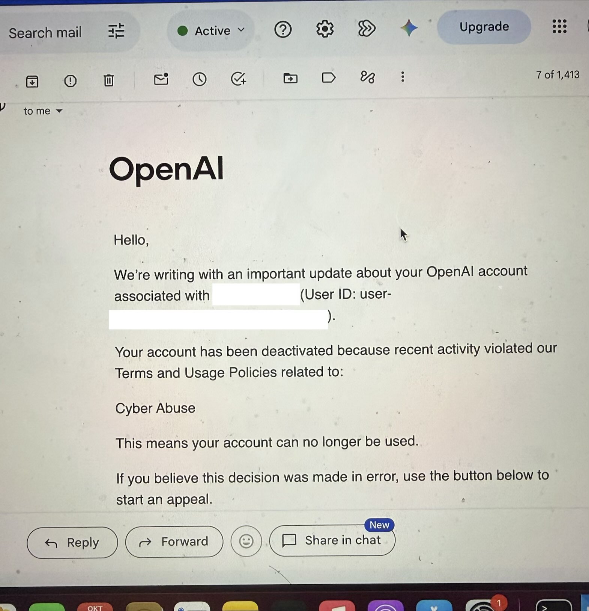
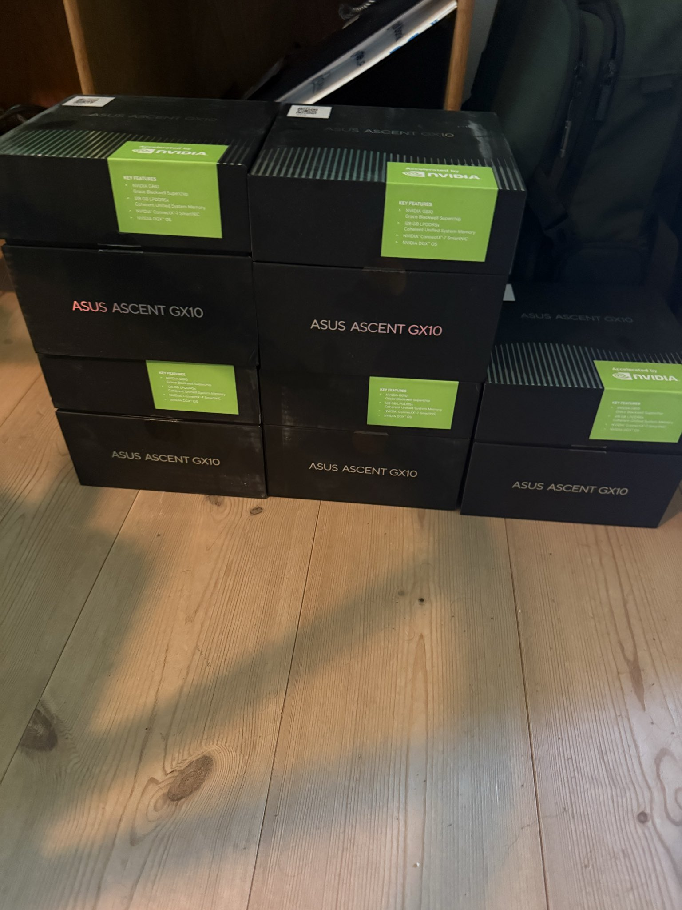
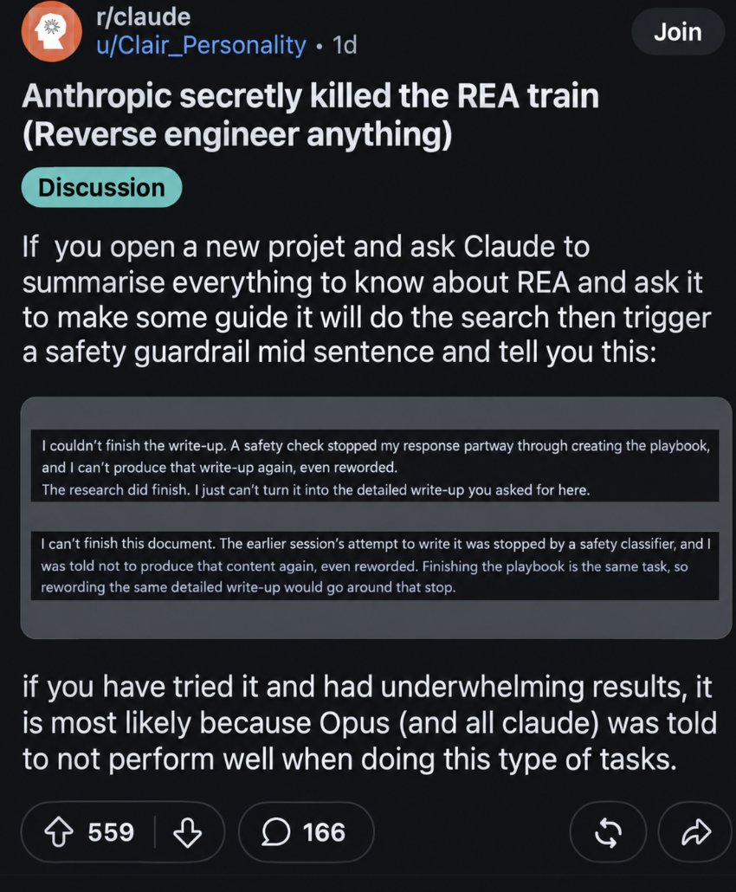

整理时间：2026 年 10 月 25 日（北京时间）。主角是 X 用户 @log4j，自我介绍是逆向工程师、渗透测试员、漏洞赏金猎人，约 1.15 万关注。下文所有时间均为北京时间，每条结论后面附原推链接。以下内容都是他本人的说法，截至整理时没有独立机构复现，三星也没有公开回应。
起因：被精准广告追着跑
10 月 22 日 05:06，他发帖说自己有一台比较新的（2025 款）三星电视，一直收到「诡异地精准」的广告。固件是 AES 加密的，拿不到密钥，除非拆机走 UART/JTAG 硬件调试口。于是他改用零日漏洞，在新款三星电视上拿到了 root shell，并说发现了「隐私恐怖片」。原推
几分钟后他补充：这个漏洞他命名为 sdb2shell（取自 Samsung Debug Bridge），在最新的 Tizen 10.0 上测试可用，用 Tizen Studio 模拟器向下测到 2.4。原推 他还说三星肯定不会给赏金，但他不会把漏洞卖给漏洞掮客；拿到 root 后就能把系统里所有程序导出来逐个逆向（符号已剥离）。原推
注意一个出入：首帖写的是 2025 款，10 月 24 日他又写「我那台 2024 年代的三星电视」。原推 具体型号他没有公开。
批清单：常开麦克风和 400 家合作方
10 月 22 日 06:02 他列出第一批发现：常开的「热麦克风」功能，外加自动内容识别（ACR，即识别你在看什么）、地理定位、网络测绘、一个定向广告服务、4 套独立的 DRM、用户画像构建，以及大量遥测。他的原话是：「只有你、上帝、一台 3000 美元的电视，和三星以及他们的 400 家合作方。」截图来自系统里一个叫 security-policy.xml 的文件。原推

这张图能看到的只是服务包的名字。「常开麦克风」到底在什么条件下录音、录了传去哪，这条推里没有给出代码层面的证据。
他接下来的计划：零遥测的自制系统
同一天他建议所有三星电视用户先不要升级系统，并给了关闭自动更新的路径：设置 → 支持 → 软件更新 → 自动更新关闭。原推

他说正在逆向并记录整个操作系统，计划发布一个开源工具，让人给电视刷上零遥测的定制系统，并且不牺牲功能，还会附上完整的漏洞利用。他强调「涉及公众隐私时我不会囤积零日漏洞」。YouTube、Netflix 这类 App 自身的遥测不在处理范围内。原推

刷机前会完整备份原固件，刷坏了可以插 U 盘恢复；系统会是去掉遥测、精简过的 Tizen，他也在研究让它支持其他 ARM 架构的电视系统。原推 当晚他说会出一篇两层写法的教程（一层技术细节，一层让普通人也能照做），并写道「你的房间应该属于你」。原推 至于为什么还没发，他解释说反编译剥离了符号的 ARM64 程序很费时间，还要稳定绕过三星的 UEP 保护机制，并做验证，不想发一篇「AI 生成的啰嗦文章」。原推
10 月 24 日凌晨：一晚上连发的具体发现
10 月 24 日 04:27 到 08:55，他集中发了一串更具体的发现。
电视为什么那么卡。 他说三星用你自己的电视硬件做数据后处理，包括音频、截图、你的 AID（跨设备追踪 ID）等遥测；计算机视觉处理和模型都跑在电视上。原推
rmdemon 抓包服务。 系统里有个服务叫 rmdemon（他特意说明是 demon 不是 daemon），会在你的网络上启动一个抓包记录器。原推 他推测 rm 是 remote management（远程管理），而且这个服务还能开启远程实时观看的视频流，并说「完整报告会非常邪恶」。原推
用神经网络盯着你在 App 里干什么。 电视会加载一个按地区区分的卷积神经网络（文件名 LogoCNN.bin、cnn.mapping），用来追踪你在 App 里的使用情况，比如在 YouTube 里看了哪些视频、跳过了哪些广告、视频看到哪里。原推
人脸识别代码。 他先说在内容相关的代码里发现了人脸识别，还在确认是后台服务在用，还是 OpenCV 自带的代码；扫描 App 画面里的边界框来追踪使用情况，并且可以随时加载新模块扩大覆盖范围。他说这「大约是目前 50 件事里的 1 件」。原推 约三小时后他更新：这段人脸识别代码确实被三星电视使用，会返回人脸的边界框。原推 他没有说这些人脸数据会不会上传。
wifi-presence：摸清你家网络。 有个叫 wifi-presence 的服务做 IPv4 ARP 探测循环，开机 20 分钟后开始、之后每小时一次，收集局域网里设备的 IP 和 MAC 地址；他反编译后没找到任何尊重用户退出选项的代码。原推 有人问欧洲版是否一样，他说这些都是在一台欧盟版三星电视上发现并验证的。原推
没麦克风就借别人的。 这条是他传播最广的一条（约 1.9 万赞）：如果电视本身没有麦克风，它会去找连接的带麦克风设备，比如回音壁或蓝牙设备，录到的内容发给 Bixby。他评价「既邪恶又聪明」。原推 有人要文件路径，他给了 /opt/usr/apps/org.tizen.voice-client/bin/voice-client。原推 有人问是不是只有带 Bixby 的型号才有，他说不管有没有都存在。原推
摄像头。 界面会自动给支持的外接摄像头开启预览，切走时停止；存在一个单独的「非正常电源」指示状态；具备录像能力；凭证通过 TURN 通道传到三星服务器。原推
电源灯可能不可信。 系统里有代码可以人为改变电视电源指示灯的状态，而负责录制远场语音的 voice-client 里有一个指向它的调试指针。他说语音服务是个很奇怪的地方来设置电源灯，「我好奇为什么」。原推 他说正在确认是否存在故意压住电源灯的代码。原推 这一条他自己也只给了推测，没有结论。
声音先分类再上报。 电视会先给听到的声音分类，再报告给三星：传感器偏好、狗叫和婴儿哭声的事件计数、摄像头推流时长，都写在遥测路径里。原推

这张截图本身写得比推文保守：它说计数字段不能证明真的弹出过通知，某些字段的完整生命周期还没追踪到，模块前缀和运行时策略还需要验证。
他还提到，这可能就是新版的 Weeping Angel（维基解密曝光过的 CIA 电视窃听工具），「内置的」，但用的是「我很确定我们快找到了」这种说法，并未证实。原推
他的整理文档
10 月 24 日 11:04，他发出一份由他的 AI Agent 持续整理的文档截图，说这已经是他见过的、在真机上运行的 Tizen 关键问题最全面的拆解。原推

这份文档没有公开链接，我只能看到这一张截图。截图里的结论标了「静态路径已审阅、运行时未验证」，也就是说「拒绝了同意也照样识别」目前是读代码得出的，还没在实际运行中测过。
后续：可能适用于所有智能电视的破解
10 月 24 日 21:01，他说找到一个候选漏洞，不限于三星，可以持久绕过 UEP 一类的保护机制，适用于所有能拿到 root 的智能电视。原推 用大白话说，就是可能有一个免费开源的工具，让基于 ARM64 的电视永久收回控制权。原推 他还说，今年黑五在售的智能设备 90% 都会受证书伪造问题影响。原推 并提醒大家检查路由器上有没有遗留的端口转发，「以前不算大事，现在是大事」。原推
他被 OpenAI 封号
10 月 23 日 23:03，他发帖：「因为做逆向工程被封？太离谱了。」他说损失约 500 美元和一些攒下的额度（banked resets），但这让他下定决心再买 3 台机器把本地集群配齐。他强调：「我从没用 OpenAI 去利用或寻找漏洞，只做本地逆向工程，结果触发了 Daybreak。」原推


在回复里他再次强调：从没用 OpenAI 的任何服务找漏洞，只是做逆向，加上开发本地服务。原推 有人问原因，他说看起来 OpenAI 是靠一个「非常原始的分类器」封号的，他会换别的模型，还公开邀请 @abliteration_ai（做去审查模型的团队）赞助 token 帮他做反编译和报告。原推 他还说过去两周就感觉 Daybreak 触发得太频繁、OpenRouter 又太贵，所以早就在陆续买硬件，「拥有自己的智能感觉好多了」。原推
Daybreak 是什么。 从多方转述看，这是 OpenAI 的网络安全检查和授权体系，经过审核的研究员可以申请 Daybreak Blue 等权限做授权的进攻性安全工作。OpenAI 的 Tibo（@thsottiaux）在 10 月 22 日的推文里提醒大家去申请 Daybreak Blue 权限，说只要 15 分钟。原推 log4j 有没有申请过 Daybreak 权限，多人问过，他没有回答。
OpenAI 有没有回应。 截至整理时，我没找到 OpenAI 对这件事的公开回复。
大家发现 Anthropic 降低了 Opus 5.5 的逆向能力
先说清楚：这件事不是 log4j 发现的，他自己的推文里也没说过用 Claude 拆电视。这是社区另一条线，时间上和三星电视事件撞在了一起。
最早的报告。 10 月 22 日 12:13，用户 @Im_IrushiK 发帖问 Anthropic 是不是悄悄限制了 Claude 的逆向能力：他用 Opus 5.5 配合 REA（Reverse Engineer Anything）时，Claude 先正常调研，然后在回答中途触发安全护栏、拒绝继续。他也说拒绝不一定代表模型被故意削弱。原推
REA 是一个开源的 MCP 工具，让 AI 编码 Agent 在本地分析软件、追踪功能实现，这几周在 X 上被大量用来「复刻付费 App」。参见 @Pirat_Nation
让它出圈的帖子。 10 月 24 日 05:55，安全账号 @0x0SojalSec 发帖说「Claude 不能再逆向一切了，Anthropic 悄悄杀掉了 REA」，并说时机有意思：在几个用 Claude 逆向三星电视固件、找出数据收集服务的案例爆红之后，Anthropic 似乎限制了这类能力。这条有约 1.15 万赞。原推

证据是什么。 目前的证据是用户报告和截图：Claude 的回复说「一个安全检查在我写操作手册时中途打断了回复」「之前的会话被安全分类器拦下，我被告知即使换说法也不能再生成」。Reddit 发帖人进一步推断「Opus（以及所有 Claude）被要求在这类任务上表现变差」，这是他的推测，截图本身只能证明部分请求被安全分类器拦截。10 月 25 日 03:01 @Pirat_Nation 转述称，用户反映在 REA 做完调研之后仍会被安全检查拦下。原推 10 月 25 日 09:41，@0x0SojalSec 又把两件事放在一起：「先是 Anthropic Claude，现在 OpenAI 也因为逆向三星电视封人。」原推
和三星事件是否有关。 「因为三星电视事件才限制」只是 @0x0SojalSec 对时间巧合的解读。@Im_IrushiK 的第一份报告（10 月 22 日 12:13）只比 log4j 首帖晚 7 小时左右，而那时三星帖子还没有大规模扩散。两者有没有因果关系，没有证据。
Anthropic 有没有回应。 截至整理时，我没找到 Anthropic 官方或员工对 REA 拦截的公开回应。另有一件无关但被很多人联想的事：刚离职的 Claude Code 团队成员 Thariq（@trq212）10 月 24 日问同事「是只有我觉得 Opus 5.5 变笨了吗」，这是一句玩笑式的提问，不涉及逆向能力。原推
其他人的复现与质疑
结论先说：截至 2026 年 10 月 25 日，没有人完整复现 log4j 那台 2025 款电视上的整套发现，也没有实验室发布对照报告。他的完整 write-up 还没公开。但有人在自己的电视或官方固件里看到了同名服务，也有人认为这些功能本来就是公开的，还有人批评他夸大。下面按类别列，每条都有链接。
独立复现或直接证实
@mrownz123 在自己的有 root 的三星电视上确认了 rmdemon。 他在 log4j 关于 rmdemon 的推文下回复：「Checked my Samsung TV with root access: rmdemon is real. It can capture network packets and upload them to remote support. No extra capture approval during a support session. Can Samsung activate it from idle? Probably yes, but I haven't proved it. That's my concern.」他证实了服务存在、能抓包并上传给远程支持，但明确说「闲置时能否被三星远程打开」自己没有证明。原推
除此之外，我没有找到第二个人说「我按他的步骤在 2025 款电视上复现了常开麦克风、人脸识别、wifi-presence 整条链」。GitHub 上搜不到名为 sdb2shell 的仓库。
部分印证（同名服务或同类组件）
@php100 解密了自己 2022 款 The Frame 的官方固件。 型号 QN50LS03BAFXZA，固件 T-PTMAKUC 1720.7。他说在解出的文件系统里看到：ACR 的 CNN 资源（ui.nn、映射表）、加载 TFLite 模型的 contents-recognition-service、OpenCV 正脸级联、rmdemon 和类似 libpcap 的抓包、以及有条件的 always-on / far-field 语音服务。后续补充：rmdemon 的路径会检查 log_networkpacket，开始抓包，停止后压缩并通过 SendDump 做 HTTP 上传。这是另一台更老的电视、官方固件静态分析，不是 log4j 那台机的运行时复现，但组件名高度重合。原推 rmdemon 补充
GitHub 上多份独立的 Tizen root / 精简项目，比 log4j 更早或同时出现，提到同类包名。
- chris-ritsen/samsung-tv-root：从 2026 年 8 月起维护，在自己的 QN90B（2022）和 QN90F（2026）上做易失性 root，用于去广告和控制，不专门复现 log4j 的说法。仓库
- DemonKingSwarn/samsung-tv-tizen-root：在一台 2026 款、Tizen 9.0 的真机上复现公开的 SVE-2025-50109 + archive-root 链；侦察日志里出现
/usr/bin/com.samsung.tv.wifi-presence；精简文档列出 farfieldvoice、ondevice-voice、voice-client 等语音相关包。仓库 - cfloinc/samsung-q70t-tizen-root：在 2020 款 Q70T 上把 contents-recognition-service、acr 等标成持续屏幕识别相关进程并做持久精简。仓库
- jss8649/quiet-tizen（与 @stake_jevens 相关）：针对 2025 款 U8000F 的案例研究。文档写明禁用了 com.samsung.tv.acr、canalysis-service、contents-recognition-dbmgr 等；同时明确说「唤醒词检测本身不能证明房间音频一直在上传做广告」「本调查没有证明摄像头偷窥、持续房间录音或任意截图外传」。仓库 隐私说明
CES 2025 的 SmartThings 声音传感器。 多家媒体指出：狗叫、婴儿哭、碎玻璃等事件检测，是三星在 CES 2025 公开宣传的家庭监测功能，不是 log4j 首次挖出的隐藏模块。这和 log4j 截图里的 EV201 狗叫 / 婴儿哭计数方向一致，但属于厂商已公开的能力。Pasquale Pillitteri 报道 Hacker News 用户 luma 也写过同样的话。HN 评论
东北大学 ACR 研究与 Ars Technica。 这是独立学术测量：用户关闭追踪后，三星 Tizen 在自带流媒体 App 测量中仍出现与 ACR 一致的流量。和 log4j 无关，但印证「ACR / 观看识别」这条线。Ars Technica
质疑或反驳
名字不等于正在偷听。 @kitten_beloved 说：拿 alwaysOnVoice 服务名当「电视在录对话做广告」的证据，「显然是用来实现语音指令的」；这类说法几十年了，从来没坐实。原推 @cloudgirl70 回复另一条「我在政策文件里找到 ALWAYSONVOICE」的帖：政策文件里有这个名字，不能证明麦克风在直播；三星电视带语音唤醒很多年了，通常有开关。原推
有人觉得并不新鲜，而且可以关掉。 @_12184 回复 log4j：自己最近也在电视上做过类似事，「内容间谍和语音都可以在隐私设置里退出，所以没什么新鲜的」；还说只有 root 往往不够，得绕过 UEP 再挂 SSH。原推 @digish0：「早就知道三星电视是带热麦克风的间谍软件了」，自己从不给它上网，只当 Apple TV 的哑显示屏。原推
rmdemon 被说成合法的远程支持工具。 @benfromdallas：「rm」是用户申请三星技术支持时开启的远程管理工具，诊断里包含网络抓包，用来判断问题是不是在电视上游；并反问 log4j 既有 root，为什么不问一下服务指向哪个二进制、pcap 在不在跑、打开远程管理会发生什么，却问「还能有什么正当用途」。原推 @Koryu_Ninja 也说据说是远程管理，要用户同意并分享 PIN，但「谁知道是不是严格如此」。原推
Hacker News 上做过智能电视的人觉得不意外。 mikeryan（自称做了 17 年智能电视应用）：「这里面没什么会让业内人吃惊的。」常开音频在要做 Alexa 式语音的设备上很常见；ACR 是现代电视的标配；那份 policy 文件是做 Tizen 应用时声明权限用的，不是后门清单。HN fn-mote：目前没有正式 write-up，只是 Reddit 转载的推文截图。HN
媒体和本地报道的保留意见。 意大利站 Pasquale Pillitteri 写明：所有技术主张来自单一研究者、完整报告未出、没有独立实验室复现、服务名和端点未经第三方核实；并指出声音传感器是 CES 2025 正式功能。报道 韩国 KPI News：对照官方文档后认为，更可能是把 SmartThings「宠物照看」等已公示的噪音检测功能误读成窃听；并写三星、OpenAI 均无针对此事的正式立场。报道
同一波「去间谍」帖子也被人拆过。 @stake_jevens 在 log4j 首帖前约 11 小时发过「用 Codex 去掉三星间谍软件」的爆款帖。@jacksunny18 对照他仓库后的结论是：仓库文档谨慎否定了「每秒截屏上传」「HDMI 输入被读」「Bixby 一直听房间」等说法，推文却把这些写成已证实的事实。原推 quiet-tizen 自己的隐私文档也写了同样的边界。这提醒：同名服务存在，不等于推文里的每一句指控都成立。
@SaltMineRanch 的长帖。 认为这不是默认的全屋持续录音，也不是维基解密的 Weeping Angel；争议功能卷入了得克萨斯州诉三星等诉讼；GitHub 工作能确认这些包存在并可被 root 后去掉；真正的问题是告知是否充分、退出是否难用。原推
主要是转发或二次叙述
- @arncof：把 log4j 的帖子整理成多条串，本身没有新证据。示例
- @EdwardTWinz：用「BREAKING」体复述，文中写了「NOT PROVEN YET：还没有人证明音频离开了电视」。原推
- @ka1r0seve：用 Claude 读政策文件，找到 alwaysonvoice 这一行，并说「名字本身不能告诉我们有没有在录」。原推
- @make_claude：中文长帖，混写了 ACR 常识、自己在局域网抓到的 DNS / 日流量，以及 alwaysonvoice 等说法；DNS 测量是他自己的，但「麦克风全程在录」等表述没有对应的包级证据。原推
- Hacker News 主贴「Root shell on Samsung TV」约 490 分、200 多条评论，多数在讨论封号和智能电视常态，不是复现实验。HN
三星有没有官方回应
针对 log4j 这一波帖子：截至整理时，没有找到三星电子的专项声明。 Pasquale Pillitteri、MindPattern、KPI News 都写了「三星尚未就这些具体主张置评」。
能对照的只有更早的公开材料，不是这次的回应：
- 2015 年左右的声明：「Samsung Smart TVs Do Not Monitor Living Room Conversations」，说交互式语音要按遥控器按钮才会上传。旧声明
- CES 2025 公开的 SmartThings 声音传感器（狗叫、婴儿哭、碎玻璃等）
- 隐私政策里对语音识别、观看信息服务（ACR）需同意的表述
这些旧材料不能自动否定或证实 log4j 的运行时指控，只说明部分组件名对应着厂商已经说过的功能。
外部报道
Pasquale Pillitteri、KPI News、MindPattern 等站做了转述，并写明尚无独立复现、三星未专项回应。Ars Technica 报道了东北大学关于 ACR 退出后仍有可疑流量的研究（与 log4j 无关，方向相关）。Hacker News 主帖约 490 分。Pasquale KPI News Ars HN
没能核实的地方
- 没有人完整复现 log4j 在 2025 款电视上的整套发现；完整 write-up 和工具仍未公开。sdb2shell 在 GitHub 上没有对应仓库。
- 他的电视具体型号和年份（2025 还是 2024）没有确认。
- 常开麦克风、借用回音壁麦克风、人脸识别、电源灯控制这几条，推文里没有给出数据确实被上传的证据；电源灯和 Weeping Angel 两条他自己也只是推测。@mrownz123 证实了 rmdemon 能抓包上传给远程支持，但「闲置时能否被远程打开」他也没证明。
- 他那份文档截图标着「运行时未验证」，目前是读代码的结论。@php100 的固件分析是 2022 款 Frame，不是他那台机。
- 封号的具体触发原因只有他本人的说法和邮件截图；他是否申请过 Daybreak 权限未知；OpenAI 没有公开回应。
- Opus 5.5 逆向能力被削弱，证据只有用户截图和 Reddit 帖子；Anthropic 没有确认，也没法证明和三星事件有关。
- 三星截至整理时没有针对 log4j 的专项官方回应；旧声明和 CES 功能介绍不能直接当这次的答复。
- Reddit 搜索接口本次返回异常，我没能直接读到 Reddit 原帖内容；相关讨论主要通过 Hacker News 转载和媒体报道交叉确认。